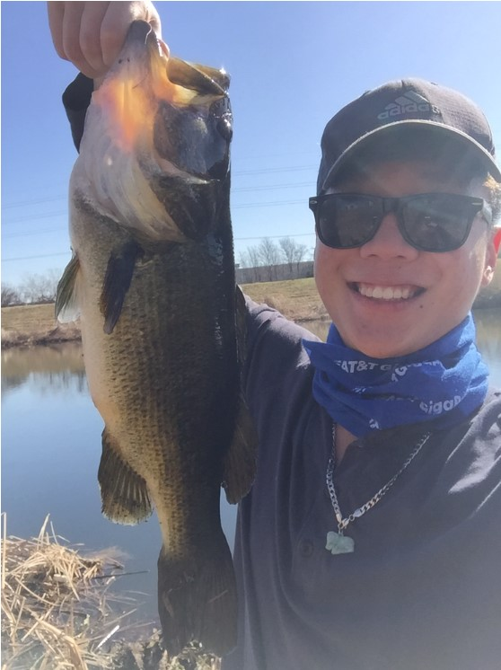

This week I worked with my group on starting the iDB1 project. We decided to make an application that included models of hiking trails in Colorado, ski resorts in Colorado, and images of the trails and resorts in Colorado, which I am super excited about. One of our teammates, Robert, seems to have a lot of experience with the trails and resorts in the area, which is good because he should know what information is pertinent to hikers and skiiers, and can make our application very practical.
I need to learn more about making pretty webpages and get to work on designing the trails pages, which I was tasked with. I will probably have to put in a decent amount of time on Monday, Tuesday, and Wednesday before the due date. Unfortunately, I also have a Declarative Programming test that I need to study or that is also on Thursday, so balancing those two things might be an issue.
I will need to learn more about HTML and CSS and JavaScript in order to make my trails pages functinal and pretty to boot. Thankfully the pages are static pages, so I won't need to mess with much JavaScript for now.
This class has still been pretty good so far, I've expanded my knowledge of python despite knowing a decent
amount going into it. The projects seem pretty useful in explaining the tools of the industry, and I'm glad to get a lot of exposure to industrial practices like Continuous Integration, rigorous test harnesses, and communication about project specs.
Furthermore, I enjoy having some introductory knowledge into the agile method of software development, more specifically, the extreme programming flavor of it. From my experience, very many companies list on their recruitment pages that they value their candidates having exposure to agile and/or scrum. This class seems to be very relevant and helpful to my professional pursuits in the future.
My tip of the week is to do a little work every day instead of trying to knock out the project all in one block. This is because if Hackerrank decides to crap out on you for one day, you won't waste 10 hours of time trying to debug a working solution, and instead, you can wait out its faulty testing servers and fix it immediately the next day.
My pick of the week is the matplotlib/jupyter notebook/pandas triple headed dragon combination for data analysis purposes. In my data mining class, we have been using those tools to derive patterns from data and visualize them in a form people can easily understand, and they have been easy and intuitive to use for me. Check it out!